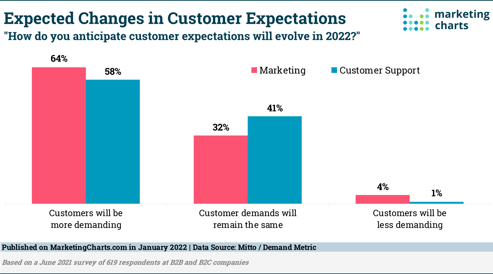

How Did the Fourth Industrial Revolution Start?
At the turn of the century, things were changing again. If you can imagine it, the pace of innovation was
once again speeding up.
In his book The Fourth Industrial Revolution, Klaus Schwab describes it like this: “It began at the turn of this
century and builds on the digital revolution. It is characterised by a much more ubiquitous and mobile Internet, by
smaller and more powerful sensors that have become cheaper, and by artificial intelligence and machine learning.”
What Is the Fourth Industrial Revolution?
It signifies a smarter, more connected world, currently in the process of being built. It parallels historical industrial
revolutions but is driven by innovations such as the cloud, social media, mobile technology, the Internet of Things (IoT),
and artificial intelligence (AI). Combined with increased computing power and big data, these innovations are shaping the next
wave of industrial transformation. Described as ongoing and transformative, this revolution impacts systems we often take for
granted in our daily lives. The presence of apps for navigation, wearable devices, car sensors, and real-time updates at bus
stops are tangible examples of these innovations. The Fourth Industrial Revolution is already underway, with new advancements
emerging regularly. So if you want to discover ways to survive in this revolution, continue to read this!
What is the difference between the Fourth Different and the Third Industrial Revolution?
Yes, it can seem like the line between this revolution and the digital revolution is a bit vague, as these two are all about computers.
According to Schwab, there are three key factors which differentiate between the 2:
-Velocity - The world is more connected than ever before, and this revolution is transforming the world far more
quickly than the first three did.
-Breadth and depth - We are seeing the emergence of entirely new ways in which to
live. Technology is also changing what it means to be human.
-Systems impact - 4th Industrial Revolution advances are so sophisticated and interconnected that they’re transforming
major systems (politics and the economy, for example) as well as entire countries and societies.
Why Is the Fourth Industrial Revolution Happening?
Industrial revolutions are fueled by innovative technologies that, once affordable and scalable, reshape society. In the Fourth
Industrial Revolution, the remarkable changes stem from cheaper computing power, widespread connectivity, and the accessibility of
advanced technologies like algorithms, machine learning, and artificial intelligence. Additionally, a significant reduction in the cost
of genetic sequencing plays a role. These advancements are enabling the development of self-driving cars, virtual assistants, and more
precise disease diagnosis, transforming the physical, digital, and biological realms. But most importantly, during these days...
These Days, Customers Expect More
Today's customers expect instant, personalized service across various channels like social media, email, chat, or phone. Technological
evolution, exemplified by companies like Google, Alibaba, and Facebook, has elevated customer expectations. The digital-savvy millennial
generation, comprising over half the workforce, further emphasizes the demand for businesses to anticipate needs and provide personalized
support. In the digital economy, centered around Internet-based and digital technologies, successful businesses shift from a
transactional to a relationship-focused model, emphasizing service and deeper customer connections.

Below, you can see the professinal's research about the increasing customer's expectations in 2022.
